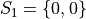
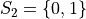
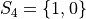
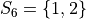
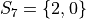
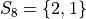
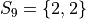

Sampling Distributions#
Central Limit Theorem#
The Central Limit Theorem is one of the most important theorems in statistics. The Central Limit Theorem is what allows us to use the Normal Distribution to make inferences about the population
TODO
Motivation#
Consider a pop-quiz made up of two questions administered to a population of a 100 students. Suppose you conducted a census of how many questions each student got right on the pop-quiz. In other words, suppose you knew the probability distribution for the population was given by,
x |
p(x) |
|---|---|
0 |
0.20 |
1 |
0.30 |
2 |
0.50 |
It is important to keep in mind the meaning of this table. The right hand column represents the probability of selecting an individual with the left hand column number of answers correct. In other words, the probability a single randomly selected individual from the population got 0 answers correct is 0.20, or 20%. Similarly, the probability a single randomly selected individual from the population got 1 answer correct is 0.40, or 40%. Finally, the probability a single randomly selected individual from the population got both answers correct is again 0.50, or 50%. A graph of the density_function helps visualizes the situation,
(Source code, png, hires.png, pdf)

Since we are assuming we know the population distribution, we can see how sampling the population affects the value and distribution of the sample mean. This will provide insight into the more likely scenario of not knowing anything about the population and only having information about the sample. In other words, in what follows, the population distribution will be assumed to see what this implies about the sample mean. Then, the conclusions regarding the sample mean will be applied to scenarios where the population distribution is unknown.
Suppose a random sample of 2 students are drawn from this population with replacement. Recall “with replacement” means the same student may be observed more than once, since every student is put back into the population for subsequenct selections.
In drawing a sample of 2 students, an account must be taken of all possible ways this sample that might be drawn. Each student will have either gotten 2 answers correct, 1 answer correct or 0 answers correct. By the Generalized Counting Principle, the total number of possible 2 person samples that can be drawn from this population is,
All possible samples Si are enumerated below in List Notation









{kind=link}
{kind=link}